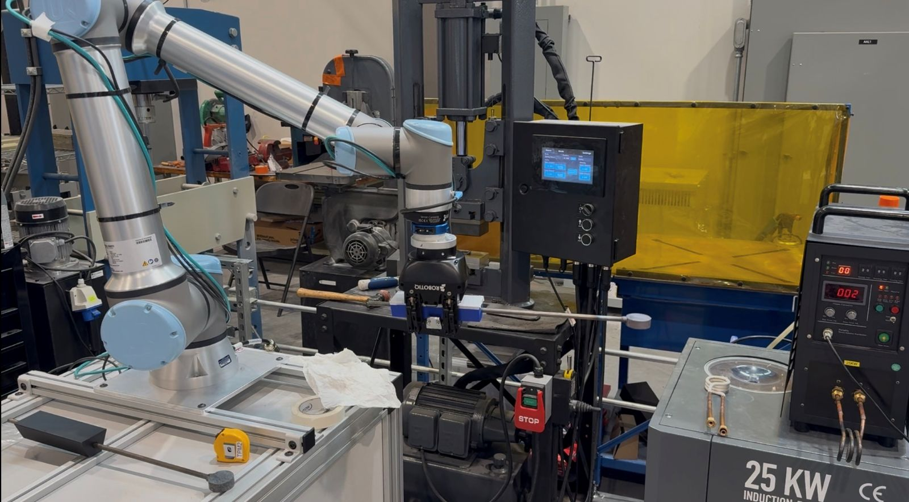

The project
I'm an undergraduate research assistant on the robotics team in Dr. Krishnan Veluswamy's lab at UT's Innovation South, part of the METAL program. Our team of three undergraduates designs ways for collaborative robots to take part in metalworking demonstrations. My work has been designing and fabricating end effectors so that a Franka Research 3 and a Universal Robots UR12e can pick up and use tools for forging and casting demos.
The demos included metal casting and forging. These involved the cobot handeling a hot metal workpiece, as well as a crucible.
Design constraints
A big design constraint for the forging demo was the odd shape of the workpiece, which required a custom grip to ensure proper grip and stability during the forging process. The main design challenge for the casting demo was the heat generated by the hot metal, which required the end effector to be made from materials that could withstand high temperatures without degrading.
What I designed
Franka Research 3
The end effector consists of two parallel halfs to wrap around the crucible. It was machined from toolsteel to acomidate the heat of the crucible and stop it from damaging the cobot.
UR12e
The UR12e end effector was designed to allow the gripper to be able to grasp the narrow metal rod for the forging demo.
Fabrication and testing
The Franka end effector was fabricated using a CNC mill and tested for grip strength and thermal resistance. The UR12e end effector was 3D printed and tested for grip strength and compatibility with the robot's gripper.
Software
My role on the project was mostly mechanical, however I was involved with writing the robot programs for the demos using the propreitary Universal robotics and Franka Research software.
Outcome
The demos were shown to multiple tour groups over the course of the summer and were planned to be shown to the METAL represntatives.